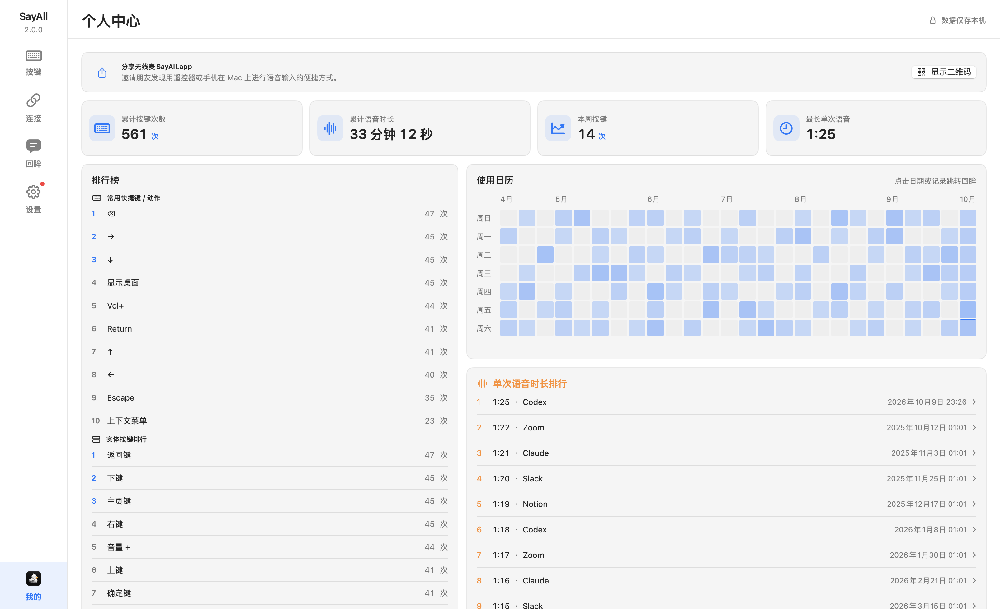
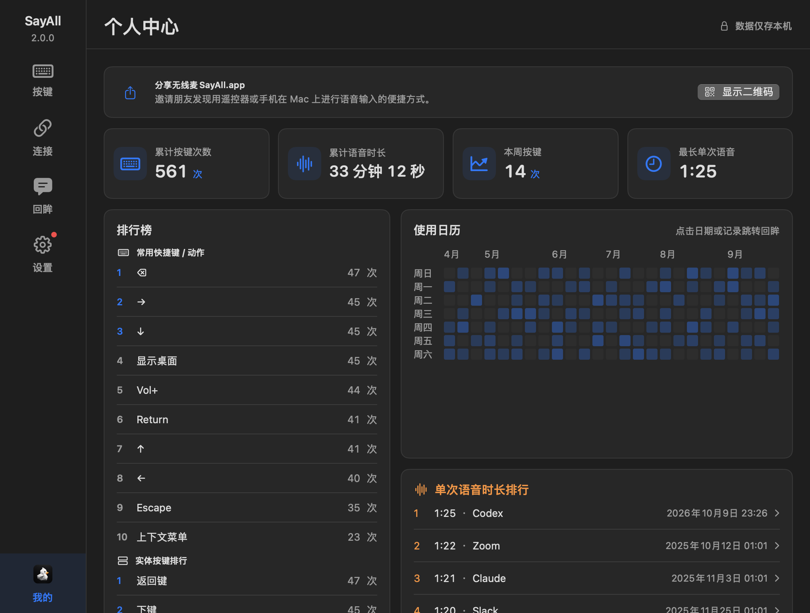

使用日历末格未锚定当天
2026-10-10 · macOS · 个人中心
结论
日历固定显示连续 182 天。左上角为最老日期。每列从上到下排列，再移到下一列。右下角最后一格为当天。
状态：源码修复完成。本机窗口验证通过。用户真实统计仍待复验。
影响范围：macOS 个人中心的日期方格和标签。统计存储、排行、颜色和跳转保持原行为。
错误证据与根因
原始记录来自用户在本会话提交的两张截图。用户要求末格为当天。
旧实现先生成 182 天，再补齐自然星期。今天不在底行时，末尾出现空格。旧算法可产生 189 格。
先抽取旧算法，保留其补位行为。新回归覆盖七个星期。六个场景失败，共 12 个问题。失败包含日期为空和格数不符。
取消首尾补位后，同一回归全部通过。星期标签从首格实际星期开始轮转。
没有现场诊断日志。该错误是同步布局错误。失败回归直接调用生产日期算法，作为根因证据。
历史 PR #521 修正了按行读取日期的问题。本次修复末格锚定，并调整实际星期标签。
最小修改
| 文件 | 必要变化 |
|---|---|
Sources/RemoteMic/SettingsView.swift |
输出连续日期，轮转星期标签，统一现有上海日历。对齐月份和星期标签。 |
Tests/RemoteMicTests/SettingsPageRegressionTests.swift |
覆盖七个星期、中英文标签、逐日连续、首末日期和当日统计。 |
Testing/ProfileStatistics.md |
更新排列规则和失败条件。 |
TODO.md |
记录日历修复，保留父功能验收边界。 |
Bugs/README.md |
添加本记录入口。 |
没有新增异步动作。取消、超时、重试和恢复不适用于本次布局。既有日期跳转仍使用原入口。本次不新增高频渲染日志。
验证结果
| 验证 | 结果 |
|---|---|
| 旧算法回归 | 七个场景中六个失败，12 个问题 |
| 修复后定向测试 | 55 项通过 |
| 同步回眸修复后测试 | 两个测试集共 64 项通过 |
| 原生 Debug App 构建 | 通过 |
| 生产页面截图 | 八张已查看，格式、尺寸和摘要通过 |
| 真实独立窗口 | 首格 2026-04-12，末格 2026-10-10 |
| 日期跳转 | 点击“在回眸中查看”进入回眸 |
| 侧栏导航 | 按键、连接、回眸、设置、我的均可进入 |
生产最小窗口为 1020 × 772。800 × 650 仅用于离屏压力检查。宽窗口 1606 × 979 显示完整 26 列。窄窗口保留横向滚动。
测试使用独立 UserDefaults 和测试统计。没有读取第三方 App 私有数据。没有修改用户真实归档。
swift test --disable-keychain --scratch-path /Users/andy/.codex/worktrees/8c39/calendar-build --filter SettingsPageRegressionTests
CONFIGURATION=debug REMOTE_MIC_BUILD_SCRATCH_PATH=/Users/andy/.codex/worktrees/8c39/calendar-build REMOTE_MIC_BUILD_CACHE_PATH=/Users/andy/.codex/worktrees/8c39/calendar-cache zsh scripts/build-app.sh
git diff --check
bash scripts/verify-repository-governance.sh origin/main本地日志保存在工作区外的持久目录。文件名为 calendar-before.log、calendar-after.log 和 calendar-app-build.log。
同步主线后再次完成原生 Debug App 构建。集成测试覆盖回眸和设置页面。结果保存在 calendar-integrated-test.log 和 calendar-integrated-build.log。
截图证据
生产 SettingsView，Debug 2.0.0。截图使用独立测试数据。以下路径均相对本记录。


全部 PNG 位于 Testing/artifacts/calendar-ending-today/。
| 子目录 | 像素尺寸 | SHA-256 |
|---|---|---|
en-dark-1020 |
2040 × 1544 | c551165e180392f5e99b457feb9ddf3470b5b3c0197b5bf649ca99af75e0a869 |
en-light-1020 |
2040 × 1544 | d20ebaed947774372abfc55fa988cb6ade81b07cd7274038b231f7dc966fcba2 |
zh-dark-1020 |
2040 × 1544 | 074734455838aa57c9b7aa81c33a02713db3a9913bbdd3dbe464d7e16414f937 |
zh-light-1020 |
2040 × 1544 | 75c49053b732962515c969f164c0c6672d02909bf6f30133c31dfa64b9839647 |
zh-dark-1606x979 |
3212 × 1958 | 55db32d91627486e7f63337d5582dfec83a10337e83cbeff957d28fed55dc065 |
zh-light-1606x979 |
3212 × 1958 | 4523f80d880911d682e9a70fd4c7d720eaf4db96d34b745807f7cfb3ff62bfa7 |
zh-dark-800x650 |
1600 × 1300 | 240d3cc53b4ac6e62e787030550b185b2d1877e8665142fbbdfbcd16a218c183 |
zh-light-800x650 |
1600 × 1300 | 97c7f61e46207884d1ba4fc605c8bb2dcdaf38d9b7234e30b934bfe861f1c325 |
验证边界
自动化证明日期算法和标签规则。截图证明静态布局。本机点击证明测试数据的选择和导航。
尚未验证用户真实统计。实体硬件、第三方文字输入和跨日真实使用不在本次验证范围。没有发布或分发安装包。